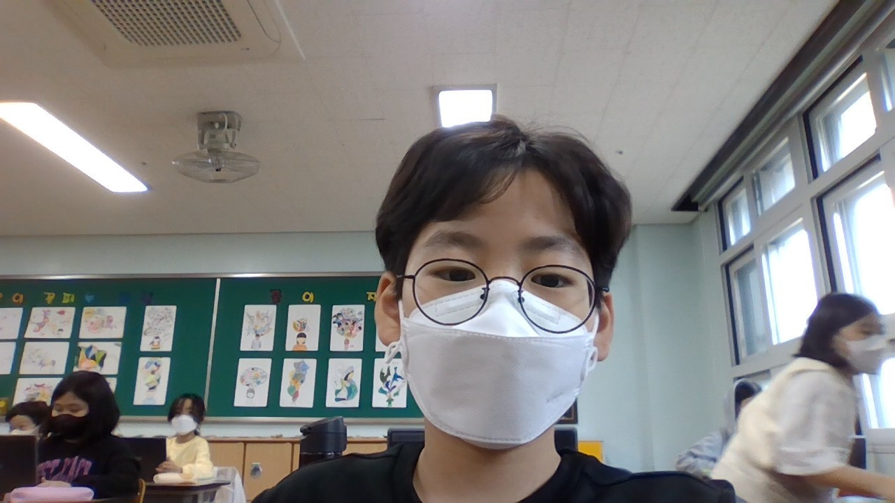

<h1>한국</h1><br/>

한국은 <b>남한</b>과 <b>북한</b>으로 나누어져 있고세 면이 바다인 <b>반도</b>이다<br/>
그리고 섬이많고 지형의 70%이상이 <b>산지</b>이다<br/>
한국의 유명한것은 언어이다 한국의 언어는 <i>한글</i>이다 <i>한글</i>은 세종대왕이 만드신 것이다<br/>
한국은 남한과 북한으로 나누어져 있어서 남한의 수도와 북한의 수도가 있다<br/>
남한의 수도는 <b>서울</b>이고 북한의 수도는 <b>평양</b>이다<br/>
